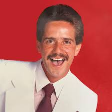

Bruno Mars
Bruno Mars (1985) es un cantante, compositor y productor estadounidense. Ha ganado 15 premios Grammy y vendido más de 200 millones de discos. Éxitos: "Uptown Funk", "Just the Way You Are" y "24K Magic".

La música es el arte de organizar sonidos y silencios en el tiempo de manera intencional para expresar
ideas, emociones o sensaciones.
construye combinando elementos como ritmo, melodía, armonía y
timbre, que juntos crean composiciones que pueden ser escuchadas y apreciadas por las personas.
La musica es parte importante de nuestras vidas asi que como cada vida, la cada cancion es unica dentro de
la musica asi dentro de la musica existen bastantes generos algunos de los generos que podrian destacarse
Bruno Mars (1985) es un cantante, compositor y productor estadounidense. Ha ganado 15 premios Grammy y vendido más de 200 millones de discos. Éxitos: "Uptown Funk", "Just the Way You Are" y "24K Magic".

Frankie Ruiz (1958-1998), "El Príncipe de la Salsa". Éxitos: "Desnúdate Mujer", "Tú Me Vuelves Loco" y "Mi Libertad". Considerado uno de los mejores salseros de todos los tiempos.
Willie Colón (1950) pionero de la salsa. Colaboró con Héctor Lavoe. Obras: "El Malo", "La Murga" e "Idilio". Múltiples Grammys y embajador de la cultura latina.
Juan Luis Guerra (1957) dominicano, 21 Grammys Latinos. Éxitos: "Ojalá Que Llueva Café", "Bachata Rosa" y "Las Avispas". Referente del merengue y la bachata mundial.